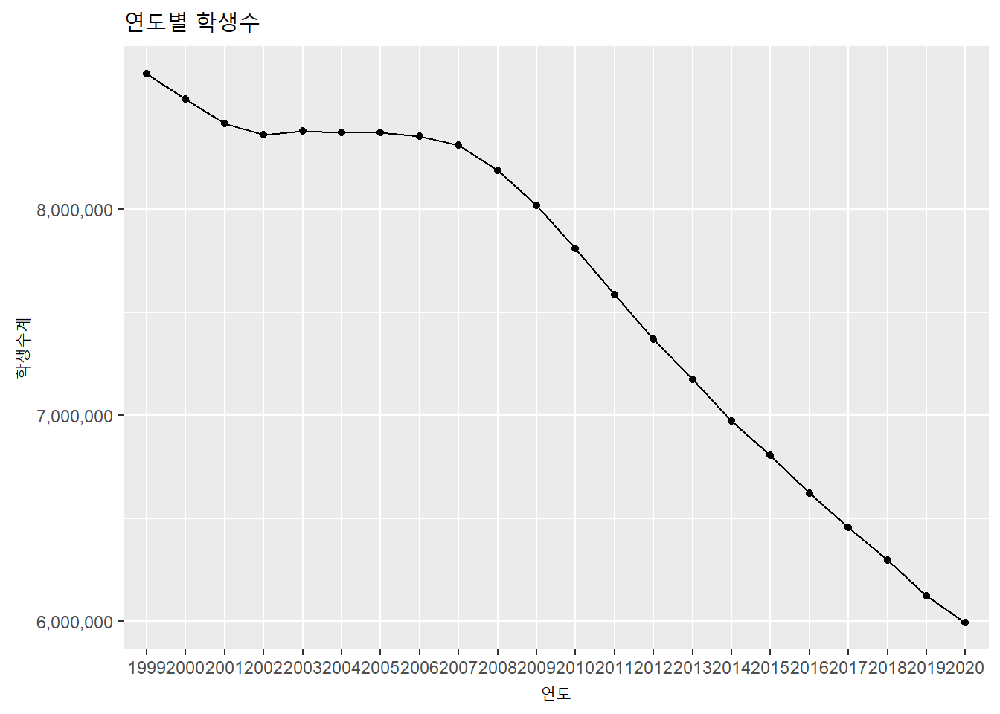

4.1 시계열 데이터 정보 다루기
4.1.1 시간 정보 추출 : 오늘 몇일이야?
시계열 데이터는 년, 월, 일, 시, 분, 초, 타임존 등의 여러 데이터가 결합되어 생성된 시간을 인덱스로 사용하는 데이터이다. 그래서 시계열 데이터를 잘 활용하기 위해서는 시간 인덱스에 포함된 요소들을 목적에 맞게 적절히 추출해내야 활용이 가능해진다.
| 함수명 | 설명 | 함수명 | 설명 | 함수명 | 설명 |
|---|---|---|---|---|---|
| year() | 연도 추출 | hour() | 시간 추출 | week() | 1월1일으로부터의 주수 |
| month() | 월 추출 | minute() | 분 추출 | quater(), semester() | 1월1일으로부터의 분기수, 반기수 |
| day() | 일 추출 | second() | 초 추출 | am(), pm() | 오전, 오후의 논리값 |
| wday() | 요일 추출 | yday() | 1월1일으로부터의 날수 | leap_year() | 윤년 여부의 논리값 |
library(lubridate)
now.date <- Sys.time() ### 현재 시간을 now.date에 저장(date 클래스)
now.char <- as.character(Sys.time()) ### 현재 시간을 now.char에 저장(character 클래스)
paste0('오늘은 ', year(now.date), '년 ', month(now.char), '월 ', day(now.date), '일 입니다')## [1] "오늘은 2021년 2월 23일 입니다"paste0('1월 1일부터 오늘까지 ', yday(now.date), '일 지났습니다')## [1] "1월 1일부터 오늘까지 54일 지났습니다"paste0('이번 분기 시작일부터 오늘까지 ', qday(now.date), '일 지났습니다')## [1] "이번 분기 시작일부터 오늘까지 54일 지났습니다"paste0('오늘은 ', wday(now.date, label = T, abbr = T), '요일입니다')## [1] "오늘은 화요일입니다"paste0('지금은 ', hour(now.date), '시 ', minute(now.char), '분 ', second(now.date), '초 입니다')## [1] "지금은 9시 46분 29.8556439876556초 입니다"paste0('이번주는 올해의 ', week(now.date), '번째 주입니다')## [1] "이번주는 올해의 8번째 주입니다"4.1.2 시간 기간 연산 : 몇일 지났어?
시간의 연산은 일반적으로 오늘로부터 며칠후, 언제로부터 몇개월전 등과 같은 연산을 의미한다. 이번 절에서는 lubridate 패키지에서는 제공하는 시간 연산 함수들을 설명한다. 다만 앞선 장에서는 ts 와 xts 클래스의 시계열 객체는 본 절에서 다루는 시계열 데이터 연산 중 일부가 지원되지 않기 때문에 data.frame을 위주로 설명하겠다.
- 시간 더하기/빼기
lubridate 패키지에서는 시간의 더하기나 빼기 연산을 지원한다. 일반적인 정수를 이용하여 더하거나 빼면 기준일로부터 과거나 미래를 산출할 수 있고 lubridate에서 제공하는 years(), months(), days() 등의 함수를 이용하면 년 단위, 월 단위, 일 단위의 연산도 가능하다.
as.Date('2021-01-01') - as.Date('1980-01-01') ### 1980년 1월 1일부터 2021년 1월 1일까지의 날짜 수## Time difference of 14976 daystoday <- today()
today + 100 ### 오늘부터 100일 후## [1] "2021-06-03"today - months(2) ### 오늘부터 2개월 전 ## [1] "2020-12-23"today - years(1) ### 오늘부터 1년전## [1] "2020-02-23"- 시간간 기간 구하기
앞선 예에서 1980년 1월 1일부터 2021년 1월 1일까지는 14,976일로 계산되었다. 그러나 우리는 보통 몇년 몇월 몇일로 표현된다. lubridate에서는 이렇게 몇년 몇월 몇일로 변환하는 것을 interval()함수를 사용하여 계산한다. 하지만 바로 계산되는 것은 아니고 interval()함수에 의해 반환되는 값은interval 클래스의 데이터값으로 시작점으로부터의 초를 기록한다. 이렇게 변환된 interval 객체를 올바르게 표현하기 위해서는 interval 객체를 period 나 duration 클래스 객체로 변환하여야 한다. interval()는 함수형태로 사용이 가능하고 %–% 연산자를 사용할 수도 있다.
int <- lubridate::interval(as.Date('1980-01-01'), as.Date('2021-12-31')) ### 1980.1.1부터 2021.12.31까지의 interval 클래스를 int에 저장
lubridate::as.period(int) ### 년월일 형태로 interval 출력## [1] "41y 11m 30d 0H 0M 0S"lubridate::as.duration(int) ### 경과 초 형태로 interval 출력## [1] "1325376000s (~42 years)"int1 <- '1980-01-01' %--% '2021-12-31'
### 1980.1.1부터 2021.12.31까지의 interval 클래스를 int1에 저장
lubridate::as.period(int1) ### 년월일 형태로 interval 출력## [1] "41y 11m 30d 0H 0M 0S"위의 예제와 같이 internal은 시간 범위(time spans)를 표현하는데 lubridate는 period와 duration의 두가지 시간 범위(time spans) 클래스를 제공한다. lubridate에서 제공하는 period함수는 복수형태(years(),months() 등)로 표현된 함수를 사용하고 duration 함수는 함수의 접두어를 ’d’를 사용하여 표현한다.
두가지 형태의 internal을 제공하는 이유는 시간 경과의 표현과 기간 경과의 표현이 다르기 때문이다. duration은 항상 수학적으로 동일한 시간 경과의 결과를 제공한다. 하지만 period는 우리가 흔히 년월일로 생각하는 기간 경과의 결과를 제공한다. 예를 들어 duration의 1년 후는 시작일로부터 365일 후가 되는 날짜를 리턴하지만 period의 1년 후는 연도가 1이 더해진 날짜를 리턴한다. 두가지의 결과가 동일할 것이라고 생각되지만 윤년이 낀 경우는 duration의 결과는 period의 결과와 달라진다. 또 duration 함수에 정수 시퀀스를 넣어주면 해당 연산에 의한 vector값이 얻어진다.2
leap_year(2020) ### 2020년은 윤년## [1] TRUEas.Date('2020-01-01') + years(1) ### 2020-01-01부터 기간상 1년 후(period)는 2021-01-01## [1] "2021-01-01"as.Date('2020-01-01') + dyears(1) ### 2020-01-01부터 시간상 1년 후(duration)는 2020-12-31## [1] "2020-12-31 06:00:00 UTC"as.Date('2021-02-01') + weeks(0:5) ### 2011-01-01부터 일주일씩 11주 같은 요일 날짜## [1] "2021-02-01" "2021-02-08" "2021-02-15" "2021-02-22" "2021-03-01"
## [6] "2021-03-08"as.Date('2020-02-01') + dweeks(0:5) ### 2012-01-01부터 일주일씩 11주 같은 요일 날짜(윤년때문에 2021과 다르다)## [1] "2020-02-01" "2020-02-08" "2020-02-15" "2020-02-22" "2020-02-29"
## [6] "2020-03-07"4.1.3 시간 반올림 : 이번주 마지막날은 몇일이야?
시간의 계산에서도 숫자의 계산과 같이 올림, 내림, 반올림 등이 가능하다. 숫자의 계산에서는 소수점 세째자리, 천단위 반올림, 올림 등과 같이 반올림될 단위를 지정해야 하는데 시간의 올림, 반올림 연산에도 월에서 반올림을 할것인지 일에서 반올림을 할 것인지와 같은 단위를 지정해야 한다.3
lubridate 패키지에서는 시간 데이터의 반올림을 위해 round_date(), 내림을 위해 floor_date(), 올림을 위해 ceiling_date() 함수를 제공한다. 매개변수로 ‘day,’ ‘week,’ ‘month,’ ‘halfyear,’ ‘year’ 등을 설정하여 반올림, 올림, 내림의 기본 단위를 지정할 수 있다.
x <- as.Date("2009-08-03")
round_date(x, "day") # 일단위로 반올림## [1] "2009-08-03"floor_date(x, "day") # 일단위로 내림## [1] "2009-08-03"ceiling_date(x, "day") # 일단위로 올림## [1] "2009-08-04"round_date(x, "week") # 주단위로 반올림## [1] "2009-08-02"floor_date(x, "week") # 주단위로 내림## [1] "2009-08-02"ceiling_date(x, "week") # 주단위로 올림## [1] "2009-08-09"round_date(x, "month") # 월단위로 반올림## [1] "2009-08-01"floor_date(x, "month") # 월단위로 내림## [1] "2009-08-01"ceiling_date(x, "month") # 월단위로 올림## [1] "2009-09-01"round_date(x, "halfyear") # 반기단위로 반올림## [1] "2009-07-01"floor_date(x, "halfyear") # 반기 단위로 내림## [1] "2009-07-01"ceiling_date(x, "halfyear") # 반기 단위로 올림## [1] "2010-01-01"round_date(x, "year") # 년단위로 반올림## [1] "2010-01-01"floor_date(x, "year") # 년단위로 내림## [1] "2009-01-01"ceiling_date(x, "year") # 년단위로 올림## [1] "2010-01-01"days_in_month(as.Date('2012-2', format = '%Y-%d')) # 말일을 구하는 코드## Feb
## 294.1.4 시간 Grouping : 주간, 월간 데이터는?
시계열 데이터를 사용할 때 많이 사용하는 계산은 월별 평균, 주별 합계 등 일정 단위별로 그룹핑한 후 그룹함수를 적용하여 산출하는 작업이다.
아쉽게도 앞서 사용한 lubridate 패키지에서는 시계열 데이터를 주단위, 월단위, 년단위 등으로 그룹핑하는 함수를 제공하지 않는다. 따라서 lubridate 함수를 이용하여 그룹화하기 위해서는 dplyr에서 제공하는 파이프 연산자인 %>%와 함수를 같이 사용하여 산출할 수 있다.
하지만 앞장에서 소개한 timetk 패키지에서는 그룹핑하여 평균을 내거나 합계를 내는 함수를 제공하기 때문에 이를 사용할 수도 있다.
이번 절에서는 lubridate와 dplyr를 사용하는 방법과 timetk를 사용하는 방법으로 분리해서 설명하겠다.
lubridate,dplyr패키지
먼저 그룹핑을 하기 위한 단위를 설정하기 위해 lubridate 패키지의 year(), month(), week() 등의 함수를 사용하여 해당 일의 년, 월, 주등을 산출하고 mutate 함수를 사용하여 컬럼으로 만들어준다. 다음 group_by 함수를 사용하여 데이터를 그룹핑하고 summarise 함수를 통해 sum(), mean() 등의 그룹 함수를 사용하여 원하는 값을 산출한다.
library(dplyr)
library(ggplot2)
### 월별 취업자수를 연별 취업자수로 그룹핑
(employees.by.year <- employees %>%
mutate(year = year(time)) %>%
group_by(year) %>%
summarise(total.year = sum(total),
employees.edu = sum(employees.edu)))## # A tibble: 8 x 3
## year total.year employees.edu
## <dbl> <int> <int>
## 1 2013 303592 21192
## 2 2014 310766 21957
## 3 2015 314133 22028
## 4 2016 316910 22350
## 5 2017 320698 22886
## 6 2018 321866 22165
## 7 2019 325474 22600
## 8 2020 322852 21570employees.by.year %>%
ggplot(aes(as.factor(year), total.year)) +
geom_line(aes(group = 1)) +
geom_text(aes(label = scales::number(total.year, big.mark = ',')), size = 3, vjust = 1.5) +
labs(title = '연별 취업자수', x = '연도', y = '취업자수') +
scale_y_continuous(labels = scales::number_format(big.mark = ','))
### 일별 확진자수를 월별 확진자수로 그룹핑
covid19 %>%
mutate(month = month(date), year = year(date)) %>%
group_by(month, year) %>%
summarise(total.1대확진자 = sum(`0-9세`),
total.10대확진자 = sum(`10-19세`),
total.20대확진자 = sum(`20-29세`),
total.30대확진자 = sum(`30-39세`),
total.40대확진자 = sum(`40-49세`),
total.50대확진자 = sum(`50-59세`),
total.60대확진자 = sum(`60-69세`),
total.70대확진자 = sum(`70-79세`),
total.80대확진자 = sum(`80세 이상`))## # A tibble: 11 x 11
## # Groups: month [11]
## month year total.1대확진자 total.10대확진자 total.20대확진자
## <dbl> <dbl> <dbl> <dbl> <dbl>
## 1 1 2021 893 1433 2241
## 2 2 2021 188 NA 412
## 3 4 2020 14 42 120
## 4 5 2020 16 62 214
## 5 6 2020 31 48 171
## 6 7 2020 53 74 258
## 7 8 2020 196 363 700
## 8 9 2020 136 161 442
## 9 10 2020 112 137 387
## 10 11 2020 301 593 1298
## 11 12 2020 1016 1589 3010
## # ... with 6 more variables: total.30대확진자 <dbl>, total.40대확진자 <dbl>,
## # total.50대확진자 <dbl>, total.60대확진자 <dbl>, total.70대확진자 <dbl>,
## # total.80대확진자 <dbl>또 하나의 방법은 tibbletime 패키지에서 제공하는 collapse_by() 함수를 사용하는 방법이다. collapse_by() 함수는 시간 인덱스열을 직접 컨트롤하여 매개변수로 전달된 기간마다 데이터를 접은(collapse) 후에 group_by() 함수를 이용해 그룹핑하여 기간별 데이터를 산출할 수 있다.4 다만 collapse_by()함수를 사용하려면 tibbletime 패키지를 설치, 로딩해야하며 tbl_time 클래스 객체로 변환된 데이터 객체에 한해서 사용할 수 있다.
library(tibbletime)
as_tbl_time(covid19, index = date) %>%
collapse_by('weekly') %>%
group_by(date) %>%
summarise(`1대`= sum(`0-9세`),
`10대` = sum(`10-19세`),
`20대` = sum(`20-29세`),
`30대` = sum(`30-39세`),
`40대` = sum(`40-49세`),
`50대` = sum(`50-59세`),
`60대` = sum(`60-69세`),
`70대` = sum(`70-79세`),
`80대` = sum(`80세 이상`)) %>%
head(10)## # A time tibble: 10 x 10
## # Index: date
## date `1대` `10대` `20대` `30대` `40대` `50대` `60대` `70대` `80대`
## <date> <dbl> <dbl> <dbl> <dbl> <dbl> <dbl> <dbl> <dbl> <dbl>
## 1 2020-04-11 4 10 24 13 12 11 15 2 5
## 2 2020-04-18 8 18 62 21 13 18 16 11 6
## 3 2020-04-25 1 10 19 7 8 9 4 3 4
## 4 2020-05-02 1 4 23 17 10 3 2 1 1
## 5 2020-05-09 1 4 19 17 8 2 6 1 2
## 6 2020-05-16 6 25 95 32 16 8 9 4 2
## 7 2020-05-23 1 12 29 12 17 6 5 3 0
## 8 2020-05-30 8 21 54 54 43 50 32 7 7
## 9 2020-06-06 6 5 26 24 26 39 44 27 8
## 10 2020-06-13 4 17 43 38 27 69 74 37 23- timetk 패키지
timetk 패키지에서는 그룹핑을 위해 summarise_by_time() 함수를 제공한다. 매개변수로 .date_var(시간컬럼), .by(그룹핑 단위) 등을 설정하고 산출하기 원하는 컬럼명과 그룹함수를 기재하여 원하는 값을 얻을 수 있다.
library(timetk)
covid19 %>%
summarise_by_time(.date_var = date, .by = 'week',
`1대`= sum(`0-9세`),
`10대` = sum(`10-19세`),
`20대` = sum(`20-29세`),
`30대` = sum(`30-39세`),
`40대` = sum(`40-49세`),
`50대` = sum(`50-59세`),
`60대` = sum(`60-69세`),
`70대` = sum(`70-79세`),
`80대` = sum(`80세 이상`))## # A tibble: 45 x 10
## date `1대` `10대` `20대` `30대` `40대` `50대` `60대` `70대` `80대`
## <date> <dbl> <dbl> <dbl> <dbl> <dbl> <dbl> <dbl> <dbl> <dbl>
## 1 2020-04-05 4 10 24 13 12 11 15 2 5
## 2 2020-04-12 8 18 62 21 13 18 16 11 6
## 3 2020-04-19 1 10 19 7 8 9 4 3 4
## 4 2020-04-26 1 4 23 17 10 3 2 1 1
## 5 2020-05-03 1 4 19 17 8 2 6 1 2
## 6 2020-05-10 6 25 95 32 16 8 9 4 2
## 7 2020-05-17 1 12 29 12 17 6 5 3 0
## 8 2020-05-24 8 21 54 54 43 50 32 7 7
## 9 2020-05-31 6 5 26 24 26 39 44 27 8
## 10 2020-06-07 4 17 43 38 27 69 74 37 23
## # ... with 35 more rowsemployees %>%
summarise_by_time(.date_var = time, .by = 'month',
total.year = sum(total),
employees.edu = sum(employees.edu)) %>%
head(10)## # A tibble: 10 x 3
## time total.year employees.edu
## <date> <int> <int>
## 1 2013-01-01 24287 1710
## 2 2013-02-01 24215 1681
## 3 2013-03-01 24736 1716
## 4 2013-04-01 25322 1745
## 5 2013-05-01 25610 1774
## 6 2013-06-01 25686 1786
## 7 2013-07-01 25681 1813
## 8 2013-08-01 25513 1811
## 9 2013-09-01 25701 1794
## 10 2013-10-01 25798 1790- xts 패키지
data.frame 클래스의 시계열 객체는 위와 같이 dplyr 패키지의 기능을 이용해 그룹핑하고 그룹함수를 적용용하지만 xts 클래스에서는 시간 유닛별로 그룹핑하여 그룹함수를 적용할 수 있는 함수를 지원한다. 따라서 연 평균, 월 합계와 같은 작업에 편리하게 사용할 수 있다.
apply.monthly(employees.xts, sum) %>% head(10)## [,1]
## 2013-01-01 25997
## 2013-02-01 25896
## 2013-03-01 26452
## 2013-04-01 27067
## 2013-05-01 27384
## 2013-06-01 27472
## 2013-07-01 27494
## 2013-08-01 27324
## 2013-09-01 27495
## 2013-10-01 27588apply.weekly(employees.xts, sum) %>% head(10)## [,1]
## 2013-01-01 25997
## 2013-02-01 25896
## 2013-03-01 26452
## 2013-04-01 27067
## 2013-05-01 27384
## 2013-06-01 27472
## 2013-07-01 27494
## 2013-08-01 27324
## 2013-09-01 27495
## 2013-10-01 27588apply.quarterly(employees.xts, sum) %>% head(10)## [,1]
## 2013-03-01 78345
## 2013-06-01 81923
## 2013-09-01 82313
## 2013-12-01 82203
## 2014-03-01 80977
## 2014-06-01 83779
## 2014-09-01 84226
## 2014-12-01 83741
## 2015-03-01 82095
## 2015-06-01 844884.1.5 OHLC : 주식 시가, 고가, 저가, 종가는 어떻게 구해?
시계열 데이터를 다룰때 앞서 설명한 grouping을 많이 사용한다. 대부분의 데이터에서는 그룹함수로 제공되는 sum(), mean(), median() 등의 함수를 사용하는 경우가 많지만 시계열 데이터, 특히 금융권 데이터에서는 OHLC 정보를 확인하는 경우도 많다 OHLC는 주어진 기간동안의 첫번째 값(Open), 최대값(High), 최소값(Low), 마지막값(Close) 값을 말한다.
- lubridate, tibbletime, dplyr 패키지
앞서 소개한 collapse_by() 함수를 사용하면 OHLC 정보를 간단히 산출할 수 있다. collapse_by()를 이용해 그룹핑할 시간 주기를 설정하고 group_by()함수를 사용하여 data.frame을 그룹핑한 후 lubridata 패키지의first(), max(), min(), last() 함수를 사용하면 산출이 가능하다.
as_tbl_time(covid19, index = date) %>%
collapse_by('weekly') %>%
group_by(date) %>%
summarise(Open = first(`0-9세`),
High = max(`0-9세`),
Low = min(`0-9세`),
Close = last(`0-9세`)) %>%
head(10)## # A time tibble: 10 x 5
## # Index: date
## date Open High Low Close
## <date> <dbl> <dbl> <dbl> <dbl>
## 1 2020-04-11 2 2 1 1
## 2 2020-04-18 0 3 0 2
## 3 2020-04-25 0 1 0 1
## 4 2020-05-02 2 2 -1 0
## 5 2020-05-09 0 1 0 0
## 6 2020-05-16 0 2 0 2
## 7 2020-05-23 0 1 0 0
## 8 2020-05-30 0 3 0 1
## 9 2020-06-06 0 3 0 3
## 10 2020-06-13 1 1 0 0- xts
xts 패키지에서는 OHLC 정보를 확인할 수 있는 함수를 직접 제공한다. to.period()함수인데 OHLC를 제공하는데 to.period 함수의 매개변수인 period에 ‘months,’ ‘quarters’ 등 적절한 시간 간격을 설정해주면 해당 기간동안의 OHCL를 자동으로 출력해준다.
to.period(covid19.xts, method = 'months', OLHC = TRUE)## Warning in to.period(covid19.xts, method = "months", OLHC = TRUE): missing
## values removed from data## covid19.xts.Open covid19.xts.High covid19.xts.Low covid19.xts.Close
## 2020-04-30 2 5 1 2
## 2020-05-31 0 11 0 7
## 2020-06-30 0 6 0 6
## 2020-07-31 0 10 -4 13
## 2020-08-31 1 35 0 15
## 2020-09-30 14 17 0 20
## 2020-10-31 6 11 0 22
## 2020-11-30 5 57 9 32
## 2020-12-31 15 86 0 132
## 2021-01-31 41 138 44 49
## 2021-02-08 20 41 30 314.1.6 시계열 데이터 Rolling
주식투자를 하는 분들은 주식거래 프로그램에서 많은 시계열 그래프들을 보게된다. 이들 그래프 중에 어떤 그래프에는 MA(5), MA(10)과 같은 표기가 된 line plot을 볼 수 있는데 이를 이동평균이라고 한다. 최근 5일 평균, 최근 10일 평균과 같이 평균의 기준 범위가 날짜별로 달라지면서 평균을 구하게 되는데 이와 같이 기준일에서 특정 기간의 일, 월의 집합 함수를 적용하는 과정을 rolling이라 하고 rolling의 기간을 rolling window라고 한다. rolling도 앞선 group과 같이 lubridate 패키지에서 제공하는 함수를 dplyr 함수와 파이프라인을 사용하는 방법, timetk 패키지를 사용하는 방법, xts 패키지를 사용하는 방법을 설명하고자 한다.
- lubridate, dplyr 패키지
lubridate 패키지를 사용하여 data.frame 클래스 객체에 대한 rolling은 좀 복잡하다. 하지만 zoo 패키지에서 제공하는 roll* 함수를 사용하면 비교적 쉽게 rolling을 수행할 수있어 이 방법을 소개하고자 한다. 사실 이 방법에서는 lubridate 패키지 함수는 사용되지 않는데 mutate 함수를 이용하여 새로운 컬럼을 생성하는데 각 컬럼을 생성하는 함수로 zoo 패키지의 roll* 함수를 사용한다. roll* 함수는 rollapply()와 rollmean()의 두가지를 제공하는데 rollapply는 apply함수를 rolling용으로 수정한 버젼이고 rollapply 함수에 mean을 적용하는 경우가 많기 때문에 추가적으로 이동평균을 구하는 함수를 제공한다.
library(zoo)
employees %>%
mutate(ma3 = rollmean(total, k = 3, fill = NA),
sum3 = rollapply(total, 3, sum, fill = NA)) %>%
select(total, ma3, sum3) %>%
head(10)## total ma3 sum3
## 1 24287 NA NA
## 2 24215 24412.67 73238
## 3 24736 24757.67 74273
## 4 25322 25222.67 75668
## 5 25610 25539.33 76618
## 6 25686 25659.00 76977
## 7 25681 25626.67 76880
## 8 25513 25631.67 76895
## 9 25701 25670.67 77012
## 10 25798 25764.67 77294- timetk 패키지
timetk 패키지에서는 rolling 기능을 위해 slidify() 함수를 제공한다. slidify() 함수가 타 함수와 다른점은 그 반환값이 함수의 실행 결과값이 아니고 함수자체를 반환한다는 것이다. 즉 rolling window 기간에 특정 함수를 적용하는 함수를 제공하기 때문에 이후 함수의 형태로 사용해야 한다. 아래의 예에 m3와 sum3는 data.frame이나 숫자값이 아니고 함수 객체이다. 이 함수 객체는 mutate 함수안에서 함수처럼 작용하는데 그 매개변수로 rolling을 해야할 컬럼을 전달하면 그 결과 벡터가 전달되는 형태로 실행된다.
ma3 <- slidify(mean, .period = 3, .align = "right")
sum3 <- slidify(sum, .period = 3, .align = "center")
class(ma3)## [1] "function"class(sum3)## [1] "function"employees %>%
mutate(ma3 = ma3(total), sum3 = sum3(total)) %>%
select(total, ma3, sum3) %>%
head(10)## total ma3 sum3
## 1 24287 NA NA
## 2 24215 NA 73238
## 3 24736 24412.67 74273
## 4 25322 24757.67 75668
## 5 25610 25222.67 76618
## 6 25686 25539.33 76977
## 7 25681 25659.00 76880
## 8 25513 25626.67 76895
## 9 25701 25631.67 77012
## 10 25798 25670.67 77294- xts 패키지
xts 패키지에서는 rolling을 위한 간단한 함수를 제공한다. rollapply함수로 xts 객체와 rolling window 기간, 적용할 함수를 전달하면 rolling을 간단히 구할수 있다.
rollapply(employees.xts, width = 3, FUN = sum) %>%
head(10)## total employees.edu
## 2013-01-01 NA NA
## 2013-02-01 NA NA
## 2013-03-01 73238 5107
## 2013-04-01 74273 5142
## 2013-05-01 75668 5235
## 2013-06-01 76618 5305
## 2013-07-01 76977 5373
## 2013-08-01 76880 5410
## 2013-09-01 76895 5418
## 2013-10-01 77012 53954.1.7 시간 조건 Filtering : 몇일부터 몇일까지 데이터는?
시계열 데이터가 아닌 데이터들은 데이터 값에 대한 조건의 결과에 따라 filtering한다. 물론 시계열 데이터도 데이터 값의 조건에 따라 filtering이 가능하지만 시간 인덱스에 조건을 적용하여 filtering도 가능하다.
- lubridate, dplyr 패키지
data.frame에 저장된 시계열 객체의 시간 인덱스 컬럼은 조건 연산자가 산술 연산과 동일하게 적용된다. 따라서 <, >, <=, >= 등의 연산자를 사용하여 인덱스를 filtering하여 전체 데이터를 filtering 할 수 있다.
covid19 %>%
filter(date >= as.Date('2020-10-01') & date <= as.Date('2020-10-10'))## date status 0-9세 10-19세 20-29세 30-39세 40-49세 50-59세 60-69세
## 1 2020-10-01 신규 6 4 7 9 14 13 13
## 2 2020-10-02 신규 3 6 6 10 6 11 13
## 3 2020-10-03 신규 1 1 6 13 11 11 16
## 4 2020-10-04 신규 0 4 4 9 13 8 12
## 5 2020-10-05 신규 0 3 17 9 8 12 14
## 6 2020-10-06 신규 5 8 26 8 2 11 9
## 7 2020-10-07 신규 1 2 8 13 10 28 31
## 8 2020-10-08 신규 6 5 6 7 9 12 11
## 9 2020-10-10 신규 0 0 0 0 0 0 0
## 70-79세 80세 이상
## 1 7 4
## 2 4 4
## 3 13 3
## 4 8 6
## 5 6 4
## 6 4 2
## 7 16 5
## 8 10 3
## 9 0 0covid19 %>%
filter(between(date, as.Date('2021-01-01'), as.Date('2021-01-15')))## date status 0-9세 10-19세 20-29세 30-39세 40-49세 50-59세 60-69세
## 1 2021-01-01 신규 41 74 131 145 154 204 159
## 2 2021-01-02 신규 39 66 111 109 106 160 125
## 3 2021-01-03 신규 32 46 80 75 88 124 117
## 4 2021-01-04 신규 40 71 120 127 172 187 153
## 5 2021-01-05 신규 45 44 107 105 112 124 108
## 6 2021-01-06 신규 45 60 106 106 110 140 148
## 7 2021-01-07 신규 41 54 123 120 155 176 113
## 8 2021-01-08 신규 34 43 91 86 83 124 125
## 9 2021-01-09 신규 32 50 100 91 89 124 80
## 10 2021-01-10 신규 36 56 87 79 94 143 87
## 11 2021-01-11 신규 19 36 47 54 61 79 79
## 12 2021-01-12 신규 32 34 71 59 91 102 74
## 13 2021-01-13 신규 24 28 66 81 83 129 87
## 14 2021-01-14 신규 25 45 60 67 82 98 71
## 15 2021-01-15 신규 42 37 62 70 81 97 91
## 70-79세 80세 이상
## 1 80 41
## 2 59 49
## 3 51 38
## 4 69 81
## 5 44 26
## 6 73 51
## 7 59 27
## 8 49 37
## 9 50 25
## 10 49 34
## 11 44 31
## 12 39 35
## 13 47 16
## 14 39 29
## 15 22 11employees %>%
filter(year(time) == 2019 & month(time) == 5)## time total employees.edu
## 1 2019-05-01 27322 1884covid19 %>%
filter(between(day(date), 3, 7)) %>% # 매월 3일부터 7일까지 filtering
head(15)## date status 0-9세 10-19세 20-29세 30-39세 40-49세 50-59세 60-69세
## 1 2020-05-03 신규 0 1 2 3 2 0 2
## 2 2020-05-04 신규 0 0 2 1 3 0 2
## 3 2020-05-05 신규 0 0 0 1 1 1 0
## 4 2020-05-06 신규 0 0 0 1 0 0 1
## 5 2020-05-07 신규 0 1 2 1 0 0 0
## 6 2020-06-03 신규 1 2 5 6 5 9 15
## 7 2020-06-04 신규 1 0 5 3 3 9 9
## 8 2020-06-05 신규 1 2 5 2 3 7 10
## 9 2020-06-06 신규 3 1 2 6 11 8 9
## 10 2020-06-07 신규 1 6 3 6 8 11 12
## 11 2020-07-03 신규 2 10 10 10 6 7 11
## 12 2020-07-04 신규 3 2 12 16 8 8 9
## 13 2020-07-05 신규 3 3 8 9 11 7 14
## 14 2020-07-06 신규 4 1 7 10 6 9 4
## 15 2020-07-07 신규 1 2 12 6 7 7 7
## 70-79세 80세 이상
## 1 1 2
## 2 0 0
## 3 0 0
## 4 0 0
## 5 0 0
## 6 6 0
## 7 6 3
## 8 7 2
## 9 8 3
## 10 8 2
## 11 4 3
## 12 2 3
## 13 6 0
## 14 2 3
## 15 2 0- timetk 패키지
timetk 패키지에서는 filter_by_time() 함수를 제공한다. 이 함수는 dplyr 패키지의 파이프라인(%>%)을 이용해서 시계열 데이터를 filtering 할 수 있다. 매개변수 .start로 시작일과 .end 종료일을 전달하면 해당 기간동안의 데이터를 반환한다. 또 timetk에서는 주어진 기간동안의 데이터에 한하여 조건에 적합한 데이터를 반환하는 filter_period() 함수를 제공한다. filter_period() 함수는 위에서 설명한 xts의 누적값을 구하는 방법과 유사하게 작동하는데 우선 데이터를 filter_period() 에서 설정한 기간으로 나누고 나뉘어진 데이터 내에서 주어진 조건에 적합한 결과들을 산출해서 반환한다. 예를 들어 매월 최대 매출일을 기록한 날, 매년 월평균 매출액보다 큰 매출을 기록한 월 등을 산출할 때 유용하다.
covid19 %>%
filter_by_time(.date_var = date, .start = '2020-10-01', .end = '2020-10-05')## date status 0-9세 10-19세 20-29세 30-39세 40-49세 50-59세 60-69세
## 1 2020-10-01 신규 6 4 7 9 14 13 13
## 2 2020-10-02 신규 3 6 6 10 6 11 13
## 3 2020-10-03 신규 1 1 6 13 11 11 16
## 4 2020-10-04 신규 0 4 4 9 13 8 12
## 5 2020-10-05 신규 0 3 17 9 8 12 14
## 70-79세 80세 이상
## 1 7 4
## 2 4 4
## 3 13 3
## 4 8 6
## 5 6 4covid19 %>%
filter(`0-9세` != 0) %>%
filter_period(.date_var = date, .period = '1 month', `0-9세` == max(`0-9세`)) %>%
head(10)## # A tibble: 10 x 11
## date status `0-9세` `10-19세` `20-29세` `30-39세` `40-49세` `50-59세`
## <date> <fct> <dbl> <dbl> <dbl> <dbl> <dbl> <dbl>
## 1 2020-04-16 신규 3 3 5 1 2 3
## 2 2020-05-27 신규 3 2 8 6 3 6
## 3 2020-06-06 신규 3 1 2 6 11 8
## 4 2020-06-23 신규 3 0 4 9 9 9
## 5 2020-06-29 신규 3 1 9 5 6 5
## 6 2020-06-30 신규 3 4 10 6 8 6
## 7 2020-07-17 신규 10 4 26 37 32 23
## 8 2020-08-23 신규 16 35 34 40 62 82
## 9 2020-08-28 신규 16 17 32 48 53 73
## 10 2020-08-29 신규 16 18 31 36 47 54
## # ... with 3 more variables: `60-69세` <dbl>, `70-79세` <dbl>, `80세
## # 이상` <dbl>- xts 패키지
xts 객체의 시간 인덱스 filtering은 앞선 lubridate, dplyr, timetk와는 조금 달리 filtering이 가능하다. xts 객체는 함수로 filtering하지 않고 [ ]내에 조건을 전달할 수 있고 연산자인 ’/’로 기간 구간을 설정할 수 있다.
covid19.xts['2020-10-02'] ### 2020-10-02에 해당하는 데이터 filtering## 0-9세 10-19세 20-29세 30-39세 40-49세 50-59세 60-69세 70-79세
## 2020-10-02 3 6 6 10 6 11 13 4covid19.xts['2020-10-01/2020-10-10'] ### 2020-10-01에서부터 2020-10-10 까지 데이터 filtering## 0-9세 10-19세 20-29세 30-39세 40-49세 50-59세 60-69세 70-79세
## 2020-10-01 6 4 7 9 14 13 13 7
## 2020-10-02 3 6 6 10 6 11 13 4
## 2020-10-03 1 1 6 13 11 11 16 13
## 2020-10-04 0 4 4 9 13 8 12 8
## 2020-10-05 0 3 17 9 8 12 14 6
## 2020-10-06 5 8 26 8 2 11 9 4
## 2020-10-07 1 2 8 13 10 28 31 16
## 2020-10-08 6 5 6 7 9 12 11 10
## 2020-10-10 0 0 0 0 0 0 0 0covid19.xts['2021-02-05/'] ### 2021-02-05일 부터 끝까지 데이터 filtering## 0-9세 10-19세 20-29세 30-39세 40-49세 50-59세 60-69세 70-79세
## 2021-02-05 30 28 30 60 42 65 75 25
## 2021-02-06 25 31 53 41 60 77 63 30
## 2021-02-07 21 27 51 47 44 79 66 26
## 2021-02-08 19 9 35 31 53 52 59 22
## 2021-02-09 15 NA 33 41 52 59 38 28covid19.xts['/2020-04-11'] ### 처음부터 2020-04-11까지의 filtering## 0-9세 10-19세 20-29세 30-39세 40-49세 50-59세 60-69세 70-79세
## 2020-04-09 2 4 12 7 7 2 2 0
## 2020-04-10 1 1 7 4 2 3 6 2
## 2020-04-11 1 5 5 2 3 6 7 0